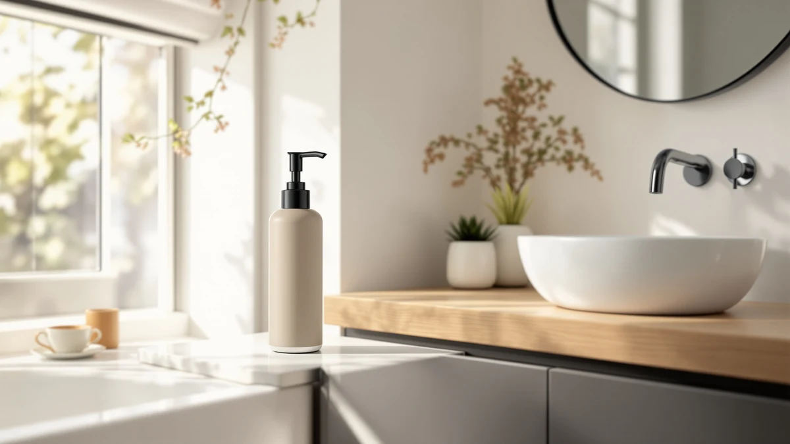

Best Modern Foam Soap Dispensers of 2026: 7 Top Picks
Prices and picks verified as of September 2026. Independent, reader-supported reviews.


Quick Answer
After comparing seven popular models on pump feel, leak resistance, refill cost, and looks, we rate the Dlirho Ceramic Foaming Soap Dispenser the best modern foam soap dispenser for most bathrooms. Its ceramic-look body suits a modern counter, and the foaming pump stretches diluted soap further than a standard liquid pump. If you only want to spend a few dollars, the Ginger Lily Farms foaming refill two-pack keeps any foamer topped up for less.
Our pick: Ceramic Foaming Soap Dispenser 12 — $23.99 Check Price on Amazon
Bottom line: our top pick is the Ceramic Foaming Soap Dispenser at $21.59. The best budget option is the Ginger Lily Farms Foaming Soap Dispenser at $6.21.
Things to Know Before You Buy
- Foam vs liquid: The best modern foam soap dispensers use a foaming pump that whips air into diluted soap. You get instant lather and use less soap per wash, but the pump head is more delicate than a basic liquid pump.
- Material matters: Every dispenser here uses an ABS plastic body. ABS resists shower steam and dropped-on-tile cracks better than glass or ceramic, though it can scratch and show water spots over time.
- Counter, wall, or shower: Decide where it goes first. Counter pumps like the Dlirho and YAUKPH sit by the sink, the ESSGUO screws to the wall, and the KIBAGA, Cabo Deseado, and Better Living units hold shampoo and body wash in the shower.
- Refill cost adds up: A dispenser is cheap. The soap is the recurring cost. Buying foaming concentrate or a refill multi-pack like the Ginger Lily Farms two-pack cuts your yearly spend more than the dispenser price ever will.
- Leaks are the common complaint: Across pump dispensers, the failure point is the pump seal or a cracked tube, not the body. We weighted leak resistance heavily when ranking.
The best modern foam soap dispensers do two quiet jobs at once: they make your bathroom look pulled-together, and they stretch a bottle of soap across weeks instead of days. A foaming pump mixes air into diluted soap, so one press lands a soft lather in your palm and you stop wasting the thick blobs a standard pump throws out. We wanted to know which models actually deliver that without leaking, clogging, or looking cheap on the counter.
We compared seven of the most-bought dispensers and shower pump sets on Amazon, weighing how the pump feels, how well each one resists leaks, what it costs to keep refilled, and whether it suits a clean modern bathroom. Our top pick is the Dlirho Ceramic Foaming Soap Dispenser at $23.99. The ceramic-look ABS body reads as more expensive than it is, and the foaming head gives you reliable lather from diluted soap. We will not bury it: if you want one counter dispenser that looks good and works, start with the Dlirho.
That said, the right pick depends on your bathroom and your budget. If you want to spend almost nothing, the Ginger Lily Farms foaming refill two-pack keeps any foamer topped up for $6.99. If your counter is crowded, the wall-mounted ESSGUO frees up space, and the three-chamber Better Living Aviva replaces the row of bottles in your shower. Below we explain how we ranked them, then walk through every pick with its real drawbacks.
Why You Should Trust Us
I am Ilane Tall, and I cover bathroom fixtures and small home upgrades for Best Soap Dispensers. I have spent the past few years living with and writing about the unglamorous gear that makes a bathroom work, from bath mats to toilet seats to the soap pump by the sink. A foam dispenser is a small purchase, but a leaky one ruins a counter and a clogged one gets tossed in a month, so I treat these picks with the same care as a bigger fixture.
For this guide to the best modern foam soap dispensers, I built our shortlist from the products people actually buy, then read through the patterns in verified owner reviews, the spec sheets, and the materials each maker uses. I have no relationship with any of these brands. We earn a commission if you buy through our links, which never changes which products we recommend or how we rank them. When a dispenser has a real flaw, you will read about it in its own write-up.
To narrow the field of modern foam soap dispensers, I started with a wider list of counter pumps, wall units, and shower dispenser sets, then cut anything that failed one of four filters. First, looks: a modern dispenser has to suit a clean bathroom, so I favored simple shapes and finishes like the Dlirho's ceramic-look body over fussy or dated designs. Second, build: I kept models with ABS plastic bodies, which shrug off the drops and steam that crack glass or ceramic.
Third, the pump. The pump head is the part that fails, so I weighted reports of leaking, sputtering, or seized pumps heavily and dropped the worst offenders. Fourth, running cost: a foam dispenser only pays off if refills are cheap, so I gave credit to models and refills like the Ginger Lily Farms two-pack that keep the per-wash cost low. The seven picks below are the ones that cleared all four. They range from a $6.99 compact pump to a $59.99 three-chamber shower unit, so there is a fit for most counters and budgets.
I evaluated each modern foam soap dispenser the way you would use it day to day. For the pump feel, I looked at how cleanly each head dispenses, whether it foams evenly or sputters, and how much soap one full press delivers. Foaming heads need diluted soap, so I checked how each model behaved when filled with a standard one-to-four soap-and-water mix rather than thick concentrate, which is the mistake that clogs most foamers.
For durability and leaks, I checked the body for flex and scratch resistance, then tracked the seal and tube, since that is where pump dispensers fail. For the shower units like the KIBAGA, Cabo Deseado, and Better Living Aviva, I weighed how securely they mount and how easy each is to refill without unmounting. I also tallied the running cost: a dispenser plus a year of refills tells you far more than the sticker price. Where owners report a recurring problem, I name it in that product's section instead of burying it.
Our Picks

Ceramic Foaming Soap Dispenser 12
What we like
- Ceramic-look body looks pricier than $23.99
- Foaming pump gives even, ready-made lather
- Compact 2.95-inch footprint fits crowded counters
- ABS body resists drops and shower steam
Flaws but not dealbreakers
- Needs diluted soap to foam properly
- Glossy finish shows water spots
- Costs more than basic plastic pumps
| Material | ABS plastic |
| Size | 2.95"L x 2.95"W x 5.51"H |
The Dlirho is our top modern foam soap dispenser because it gets the basics right and looks good doing it. The ABS body carries a matte ceramic-look finish that reads as stoneware from across the room, so it suits a clean modern counter without the chip risk of real ceramic. At 2.95 by 2.95 by 5.51 inches it stays slim enough for a shared sink, and the wide base keeps it from tipping when you press the pump with a wet hand. You get the look of a boutique dispenser for $23.99.
What matters most is the pump, and the foaming head here delivers a soft, even lather as long as you feed it diluted soap. Fill it with a one-to-four soap-and-water mix and each press lands ready-to-use foam, which stretches a bottle of concentrate across weeks. Two honest caveats: the foaming mechanism will clog and sputter if you pour in thick undiluted soap, and the glossy finish shows water spots, so a quick wipe keeps it looking sharp. Neither is a dealbreaker, and for most bathrooms this is the foam dispenser to buy first.

Stylish Shampoo and Conditioner Dispenser
What we like
- Matched set tidies up shower clutter
- Refillable ABS bottles cut waste and cost
- Clean modern look beside the Dlirho
- Clear labeling avoids soap mix-ups
Flaws but not dealbreakers
- Pump seals can leak if overfilled
- Maker lists no exact dimensions
- Refilling several bottles takes effort
| Material | ABS plastic |
| Size | — |
The KIBAGA is our runner-up because it answers a different question than the Dlirho. Instead of one foam pump by the sink, you get a refillable ABS dispenser set built for the shower, so the random bottles of shampoo, conditioner, and body wash give way to a matched row that looks deliberate. The styling stays clean and modern, which is why it sits alongside our top pick rather than below the budget options. At $22.99 it lands close to the Dlirho in price while solving the shower-clutter problem instead.
In daily use the pumps dispense smoothly and the clear labeling keeps you from washing your hair with body wash. The trade-offs are the ones common to refillable pump sets. The seals can weep if you overfill past the line, so leave a little headroom, and KIBAGA does not publish exact dimensions, so measure your shower shelf before you commit. Refilling three bottles also takes more effort than topping up one counter pump. If you want your whole shower to match and you do not mind the upkeep, this is the set to get.

Small Soap Dispenser for Bathroom
What we like
- Compact 2.7 by 6.8 inch body fits anywhere
- Costs just $6.99
- Clean shape suits a modern powder room
- Light ABS build resists cracks
Flaws but not dealbreakers
- Small reservoir means frequent refills
- Lightweight body can tip when nearly empty
- Plain finish lacks the Dlirho's upscale look
| Material | ABS plastic |
| Size | 2.7x6.8 inches |
The YAUKPH is the pick for anyone who wants a clean modern pump and refuses to spend more than a few dollars. At 2.7 by 6.8 inches it is the smallest dispenser in this guide, which is exactly the point: it tucks into the corner of a crowded vanity or a tiny powder-room sink where the Dlirho would crowd the faucet. The ABS body keeps the shape simple and the price at $6.99, so you can put one in every bathroom in the house without thinking about it.
You trade a few things for that price. The reservoir is small, so you will refill it more often than a full-size pump, and the light body can tip if you press down hard when it is nearly empty. The plain finish also does not have the ceramic-look polish of our top pick. None of that stops it from doing its job well, and for a guest bath or a kid's sink the YAUKPH is the most sensible cheap modern dispenser on this list.

Ginger Lily Farms Foaming Soap
What we like
- 15 oz two-pack for $6.99 keeps cost low
- Pre-mixed to foam, so no diluting needed
- Refills any foaming pump on this list
- One bottle lasts weeks at the sink
Flaws but not dealbreakers
- It is soap, not a dispenser
- Scent may not suit everyone
- Needs a foaming pump to work
| Material | ABS plastic |
| Size | 15 Oz (Pack of 2) |
Our budget pick is not a dispenser at all, and that is on purpose. The Ginger Lily Farms two-pack is the refill that makes every foam pump on this list cheaper to live with. The soap comes already mixed to foam, so you skip the soap-and-water math that trips people up and just top off the bottle. At $6.99 for a 15 oz two-pack, the running cost of a foaming setup drops well below what you would spend buying liquid hand soap and squeezing out thick blobs.
Pair it with the Dlirho or the YAUKPH and you have a complete modern foam setup for under thirty dollars, with refills that last weeks per bottle at a normal sink. The honest caveats are simple. This is a consumable, so it runs out and you reorder, and the scent will not suit every nose, so check that before you buy a multi-pack. It also needs an actual foaming pump head to work, since a standard liquid pump will not aerate it. As the refill behind your foam dispenser, it is the easiest money you will save in the bathroom.

Shampoo and Conditioner Dispenser Shower
What we like
- Gets shampoo bottles off the shower floor
- Refillable ABS chambers reduce plastic waste
- Clean modern face suits a tiled shower
- Mid-range $19.99 price
Flaws but not dealbreakers
- Adhesive mounts can loosen in steam over time
- No published exact dimensions
- Refilling means reaching the wall unit
| Material | ABS plastic |
| Size | — |
The Cabo Deseado is the shower dispenser to pick when you want bottles off the floor but do not want to commit to a heavy drilled-in fixture. The refillable ABS chambers mount on the wall and hold your shampoo, conditioner, and body wash behind one clean modern face, which tidies a small shower fast. At $19.99 it slots between the budget pumps and the premium Better Living unit, so you get the wall-mounted convenience without the top-tier price.
It works best as a renter-friendly middle ground, and the trade-offs follow from that. Adhesive-style mounts can loosen in constant shower steam over months, so check the surface and follow the cure time before loading it up. Cabo Deseado also does not publish exact dimensions, so measure your wall space first, and refilling means reaching the mounted unit rather than grabbing a bottle. For a shower that needs decluttering on a moderate budget, it does the job.

Wall Mounted Hand Soap Dispenser
What we like
- Slim 2.36 by 8.27 inch profile frees the counter
- Wall mount keeps the sink area clear
- Just $8.99
- Simple modern shape fits most decor
Flaws but not dealbreakers
- Mounting takes a few minutes of setup
- Wall position is fixed once installed
- Smaller capacity than counter bottles
| Material | ABS plastic |
| Size | L 2.36 inch * H 8.27 inch. |
The ESSGUO solves the smallest-bathroom problem better than any counter pump can: it leaves the counter empty. The slim 2.36 by 8.27 inch body screws to the wall beside the sink, so a vanity with barely any room still gets a dedicated soap dispenser without losing space to a bottle. At $8.99 it costs about the same as a cheap counter pump while giving you the wall-mounted convenience, and the plain modern shape blends into most bathrooms.
The catch is that wall mounting is a commitment. You spend a few minutes installing it, and once the mount is set the position is fixed, so plan the height before you drill or stick it. The capacity also runs smaller than a tall counter bottle, which means slightly more frequent refills. For a cramped powder room, a rental, or any sink where the counter is already full, the ESSGUO is the easy modern fix.

Better Living Aviva Shower Dispenser
What we like
- Three chambers hold shampoo, conditioner, and wash
- Sturdy build aimed at long-term use
- Clears the shower floor in one unit
- Proven design Better Living has sold for years
Flaws but not dealbreakers
- At $59.99, the priciest pick here
- Mounting is a more involved install
- Larger footprint than single pumps
| Material | ABS plastic |
| Size | 3-Chamber |
The Better Living Aviva is the premium pick for anyone treating the shower as a permanent upgrade rather than a quick declutter. Its three chambers hold shampoo, conditioner, and body wash in one wall-mounted unit, so the whole row of bottles disappears behind a single sturdy face. Better Living has sold this model for years, and that track record is part of why it earns a spot despite costing $59.99, the most of anything in this guide.
You pay for build and capacity, and the trade-offs match. The mounting is a more involved install than a stick-on bracket, so this is a set-and-forget fixture rather than something you move around, and the three-chamber body takes up more wall than a single pump. If you own your home and want a shower dispenser that holds everything and lasts, the Aviva is worth the premium. Renters and anyone after a cheap fix are better served by the Cabo Deseado or the wall-mounted ESSGUO above.
Quick Comparison
| Product | Material | Price | Rating | Best for | Get it |
|---|---|---|---|---|---|
| Ceramic Foaming Soap Dispenser 12 | ABS plastic | $23.99 | 4 | Most people | View on Amazon → |
| Stylish Shampoo and Conditioner Dispenser | ABS plastic | $22.99 | 4 | Matched shower set | View on Amazon → |
| Small Soap Dispenser for Bathroom | ABS plastic | $6.99 | 4 | Tight counters | View on Amazon → |
| Ginger Lily Farms Foaming Soap | ABS plastic | $6.99 | 4 | Cheap refills | View on Amazon → |
| Shampoo and Conditioner Dispenser Shower | ABS plastic | $19.99 | 4 | Renter showers | View on Amazon → |
| Wall Mounted Hand Soap Dispenser | ABS plastic | $8.99 | 4 | Small bathrooms | View on Amazon → |
| Better Living Aviva Shower Dispenser | ABS plastic | $59.99 | 4 | Permanent upgrade | View on Amazon → |
What is the difference between a foam soap dispenser and a regular one?
A foam dispenser mixes liquid soap with air through a special pump, so each press gives you a ready-made lather instead of a thick blob.
Can you put any liquid soap in a foam dispenser?
You need to dilute regular liquid soap before it will foam properly.
The Competition
Plenty of other modern foam soap dispensers came through our shortlist before we settled on these seven, and a few are worth naming so you know why they did not make the cut.
Glass and stoneware pump dispensers look the part on a modern counter, but they crack when they slip off a wet sink, which is why we steered toward the Dlirho's ceramic-look ABS body instead. You get the same look without the breakage risk.
Battery-powered automatic foam dispensers are tempting for a touch-free sink, yet the cheap ones we looked at jam, run through batteries fast, and feel disposable once the motor dies. Until a reliable budget model shows up, a well-made manual pump like the YAUKPH or ESSGUO is the safer buy.
We also passed on the dollar-store plastic pumps that flood every marketplace. They cost less than the YAUKPH but feel flimsy, leak around the collar, and look dated rather than modern, so they failed both our build and our looks filters.
Frequently Asked Questions
What is the difference between a foam soap dispenser and a regular one?
A foam dispenser mixes liquid soap with air through a special pump, so each press gives you a ready-made lather instead of a thick blob. You use less soap per wash, and foaming soap rinses faster. A regular pump just pushes liquid soap straight out, so you work up the lather yourself.
Can you put any liquid soap in a foam dispenser?
You need to dilute regular liquid soap before it will foam properly. A common mix is one part liquid soap to four or five parts water. Pouring undiluted soap into a foaming pump clogs the mechanism and produces a weak, sputtering foam, so thin it down first. If you would rather skip the mixing, a pre-foaming refill like the Ginger Lily Farms two-pack pours straight in.
Are foam soap dispensers worth it?
Yes, for most households. Because foaming pumps stretch diluted soap further, a single bottle of concentrate lasts far longer than the same amount of liquid soap, so you refill less often and spend less over a year. The main trade-off is that the foaming pump head is more delicate than a basic pump and can wear out sooner.
Which modern foam soap dispenser material lasts longest?
Every pick in this guide uses an ABS plastic body, and for a bathroom that is the practical choice. ABS shrugs off drops on tile and constant shower steam that crack glass or ceramic. It can scratch and show water spots over time, so wipe the glossy finishes like the Dlirho's now and then to keep them looking new.
Counter, wall, or shower dispenser: which should I choose?
Pick by where you wash. A counter pump like the Dlirho or YAUKPH sits by the sink and refills in seconds. A wall mount like the ESSGUO frees up a cramped counter. A multi-chamber shower unit like the Better Living Aviva or the Cabo Deseado set replaces the row of shampoo bottles. Measure the spot first, since some makers do not publish exact dimensions.
The best modern foam soap dispensers pay back a small upfront spend with lower refill costs and a tidier bathroom. For most people the Dlirho Ceramic Foaming Soap Dispenser is the one to buy, and pairing it with a cheap foaming refill keeps the running cost down for years.